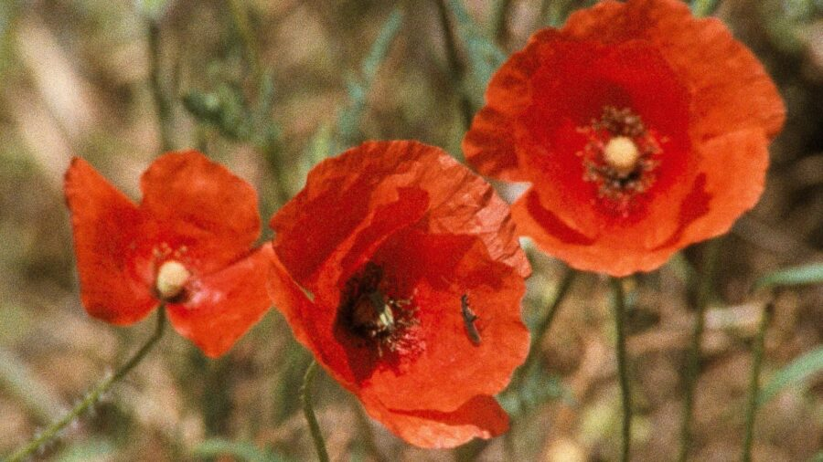

Rose Lowder: Poppies / Poppies and Sailboats / Habitat, Batrachian / Bouquets 1-10 / Bouquet 11-20 / Bouquets 21-30 / Bouquets 31-40 (2000 / 2001 / 2006 / 1995 / 2011 / 2001 / 2022)
Cinema’s Garden: The Films of Rose Lowder
Programmed by: Olivia Hunter-Willke
The practice of French-Peruvian avant-garde filmmaker Rose Lowder (born 1941) concentrates on radical ways to refine photographic and temporal features of the image. Equipped with a 16mm Bolex and filming mostly natural elements, she composes and edits images in-camera, splicing frames together as the film strip continually advances over the lens. Filmed frame-by-frame, but not sequentially, Lowder emulsifies some of the skipped frames and leaves others blank, then uses the camera to rewind and film the frames she had previously not used. Using this method, “she has created a new viewing experience, in which two different situations are viewed simultaneously” (Kortfilm). Lowder pushes the boundaries of what it means to capture nature on film, shaping a cinematographic experience with her meticulous meditations. Her films present as treasures of the natural world, but not overly precious depictions: tactile exercises of what film encompasses at its most simple yet exacting modes of operation.
All 16mm prints courtesy of Light Cone.
Rose Lowder: Poppies / Poppies and Sailboats / Habitat, Batrachian / Bouquets 1-10 / Bouquet 11-20 / Bouquets 21-30 / Bouquets 31-40 (2000 / 2001 / 2006 / 1995 / 2011 / 2001 / 2022) · 3m / 3m / 9m / 12m / 14m / 14m / 11m · 16mm
The Bouquets series consists of one-minute films composed in-camera. The filming entails using the film strip as a canvas with the freedom to film frames on any part of the strip in any order, running the film through the camera as many times as needed. Each bouquet of flowers is also a unique bouquet of film frames.